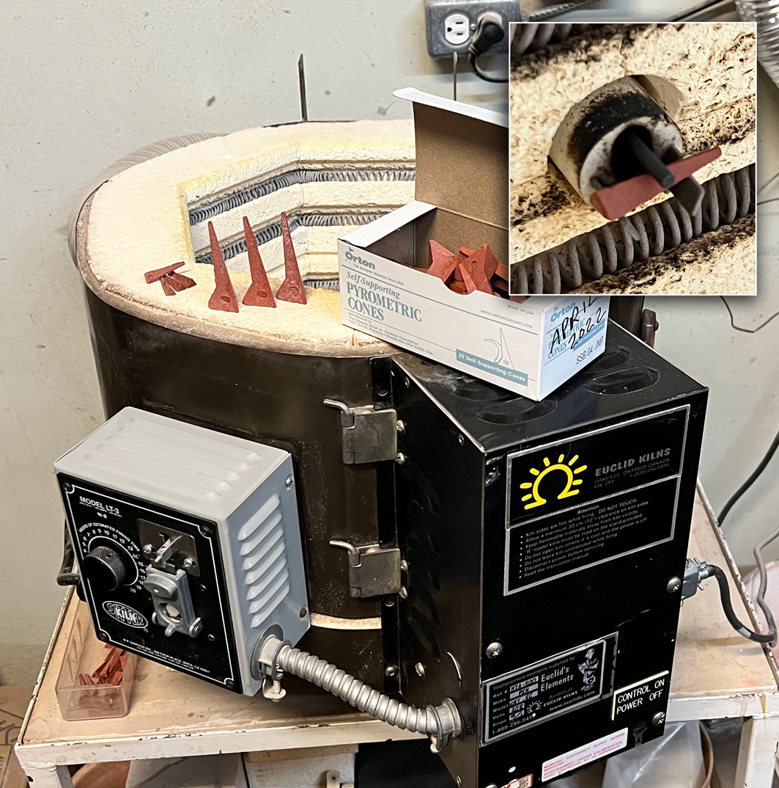

04DSDH - Low Temperature Drop-and-Hold
BQ1000 - Plainsman Electric Bisque Firing Schedule
BRTF05 - Bartlett Fast Glaze Cone 05
BRTF6 - Bartlett Fast Glaze Cone 6
BRTS6 - Bartlett Slow Glaze Cone 6
BTFB04 - Bartlett Fast Bisque Cone 04
BTSB04 - Bartlett Slow Bisque Cone 04
BTSG05 - Bartlett Slow Glaze Cone 05
C04PLTP - Plainsman Low Temperature Drop-and-hold
C10RPL - Plainsman Cone 10R Firing
C5DHSC - Plainsman Cone 5 Drop-and-Hold Slow-Cool
C6DHSC - Plainsman Cone 6 Drop-and-hold, Slow Cool
C6IRED - Cone 6 Iron Reds
C6MSGL1 - Mastering Glazes Cone 6
C6PLST - Plainsman Cone 6 Electric Standard
FSCG1 - Shimbo Crystal Schedule 1
FSCGB1 - Shimbo Crystal Holding Pattern 2
FSCGCL - Shimbo Crystal Celestite Schedule
FSCGWM - Wollast-O-Matte Fara Shimbo Crystalline Glaze
FSCRGL - GC106 Base for Crystalline Glazes
FSHP1 - Shimbo Crystal Holding Pattern 1
FSHP3 - Shimbo Crystal Holding Pattern 3
FSNM5 - Fa's Number Five
MDDCL - Medalta Decal Firing
PLC6CR - Cone 6 Crystal Glaze Plainsman
PLC6DS - Cone 6 Drop-and-Soak Firing Schedule
QICA - Quartz Inversion Cracking Avoider
"PLC6DS" Firing Schedule
Cone 6 Drop-and-Soak Firing Schedule
For the reasons explained here this schedule is much superior to those built into kiln controllers (they have no holds, no controlled cooling).
We use this, instead of the C6DHSC schedule, when firing variations of G2934 (slow cooling makes our versions too matte). We do not generally fire large or densely-packed kiln loads (which slow-cool naturally), in our test kilns this cools fairly quickly. An advantage of this schedule is that it takes less time, firings closed in an afternoon are ready to open in the morning.
-Step 1. Drying needs to be complete because the next step proceeds rapidly. Extend the soaking time if your ware is thick or heavy or the kiln is densely loaded. 250F, although above boiling point, is not enough to fracture ware, but needed to completely dry it.
-Step 2 climbs quickly, your kiln may or may not be able to maintain the rate. If it can, consider increasing it to 400F/hr. The optional soak is to even out the heat distribution in the ware and enable the micro-bubble clouds of escaping gases of decomposition to combine and escape before the final push to top temperature (with a lower bubble population during that push). To simply heal blisters, the soak part of this step is not needed.
-Step 3: The push to the final temperature. Include a self-supporting cone 6 frequently in firings to monitor the accuracy of your controller. Adjust this step to correspond to where the tip of cone 6 falls even with the top of the base (see picture below). We use this 10-minute hold for a small test kiln, larger kilns will need a longer hold to stabilize temperature within the chamber.
- Step 4: Free-fall 100F and hold. The reason: Bubbles often just percolate during soaks at top temperature, becoming blisters in the fired ware. Holding at the lower temperature imposes a melt viscosity sufficient to overcome surface tension and burst the bubbles but still has enough fluidity to heal them. You may need to customize this temperature for your kiln, ware and glazes. For example, if glazes are more fluid and reactive, drop lower, perhaps 200F down. Do not go too low or the glaze could crystallize during the soak.
You must program your firing manually, there is no built-in schedule even remotely similar to this. Don't have a kiln controller? By a little experimentation, you can develop a switching pattern to approximate this.
| Step | °C | °F | Hold | Time | |
|---|---|---|---|---|---|
| 1 | 60°C/hr to 121C | 108°F/hr to 250F | 60min | 2:37 | Longer soak if bisque ware is waterlogged and heavy |
| 2 | 194°C/hr to 1148C | 350°F/hr to 2100F | 0 | 7:54 | Optionally soak here 30 minutes to clear bubble clouds |
| 3 | 60°C/hr to 1204C | 108°F/hr to 2200F | 10min | 8:59 | Slow this rise or extend hold if the kiln is very densely loaded |
| 4 | 500°C/hr to 1148C | 900°F/hr to 2100F | 30min | 9:36 | This step heals blisters, clears more bubbles |
"Fahrenheit degrees" is not the same as "degrees Fahrenheit". A 100° reading on a Fahrenheit thermometer is equal to a 37° reading on a Celcius thermometer. But "100 Fahrenheit degrees of temperature change" is equivalent "55 Celsius degrees of change". That is an important distinction to understand the above temperature conversions.
Related Information
Manually programming a Bartlett V6-CF hobby kiln controller

This picture has its own page with more detail, click here to see it.
I document programs in my account at insight-live.com, then print them out and enter them into the controller. This controller can hold six, it calls them Users. The one I last edited is the one that runs when I press "Start". When I press the "Enter Program" button it asks which User: I key in "2" (for my cone 6 lab tests). It asks how many segments: I press Enter to accept the 3 (remember, I am editing the program). After that it asks questions about each step (rows 2, 3, 4): the Ramp "rA" (degrees F/hr), the Temperature to go to (°F) to and the Hold time in minutes (HLdx). In this program I am heating at 300F/hr to 240F and holding 60 minutes, then 400/hr to 2095 and holding zero minutes, then at 108/hr to 2195 and holding 10 minutes. The last step is to set a temperature where an alarm should start sounding (I set 9999 so it will never sound). When complete it reads "Idle". Then I press the "Start" button to begin. If I want to change it I press the "Stop" button. Those ten other buttons? Don't use them, automatic firing is not accurate. One more thing: If it is not responding to "Enter Program" press the Stop button first.
Program your firings manually
Calibrate the final temperature using cones

This picture has its own page with more detail, click here to see it.
Here is an example of our lab firing schedule for cone 10 oxidation (which the cone-fire mode does not do correctly). To actually go to cone 10 we need to manually create a program that fires higher than the built-in cone-fire one. Determining how high to go is a matter of repeated firings verified using a self-supporting cone (regular cones are not accurate). I keep notes in the schedule record in an account at insight-live.com. And we have a chart on the wall showing the latest temperature for each of the cones we fire to. What about cone 6? Controllers fire it to 2235, we put down a cone at 2200!
How many degrees between these cone positions?

This picture has its own page with more detail, click here to see it.
I was consistently getting the cone on the left when using a custom-programmed firing schedule to 2204F (for cone 6 with ten minute hold). However Orton recommends that the tip of the self supporting cone should be even with the top of the base (they consider the indicating part of the cone to be the part above the base). So I adjusted the program to finish at 2200F and got the cone on the right. But note: This applies to that kiln at that point in time (with that pyrometer and that firing schedule). Our other test kiln bends the cone to 5 o'clock at 2195F. Since kiln controllers fire cone 6 at 2230 (for the built-in one-button firings) your kiln is almost certainly over firing!
Glaze with an encapsulated stain is bubbling. It needs Zircopax.

This picture has its own page with more detail, click here to see it.
These two pieces are fired at cone 6. The base transparent glaze is the same - G2926B Plainsman transparent. The amount of encapsulated red stain is the same (11% Mason 6021 Dark Red). But two things are different. Number 1: 2% Zircopax (zircon) has been added to the upper glaze. The stain manufacturers recommend this, saying that it makes for a brighter color. However, that is not what we see here. What we do see is the particles of unmelting zircon acting as seeds and collection points for the bubbles (the larger ones produced are escaping). Number 2: The firing schedule. The top one has been fired to approach cone 6 and 100F/hr, held for five minutes at 2200F (cone 6 as verified in our kiln by cones), dropped quickly to 2100F and held for 30 minutes.
One fired flawless, the other dimpled and pinholed.
These are the same glaze/body. Why?

This picture has its own page with more detail, click here to see it.
The difference is a slow-cool firing. Both mugs are Plainsman M340 and have the L3954B black engobe inside and partway down on the outside. Both were dip-glazed with the GA6-B amber transparent and fired to cone 6. The one on the right was fired using the PLC6DS drop-and-hold schedule. That eliminated any blisters, but some pinholes remained. The one on the left was fired using the C6DHSC slow-cool schedule. That differs in one way: It cools at 150F/hr from 2100F to 1400F (as opposed to a free-fall). It is amazing how much this improves the brilliance and surface quality (not fully indicated by this photo, the mug on the left is much better).
Blisters in a highly melt-fluid cone 6 sculpture glaze

This picture has its own page with more detail, click here to see it.
Why are these happening (on this piece by Paul Briggs)? It is not completely clear. The glaze has plenty of carbonates, including copper, enough for over 20% LOI. But these normally produce high populations of small blisters, this is the opposite. The melt appears to have enough surface tension that the bubbles survive and endure top-temperature-soaking. And they don't pop until the temperature has dropped so far that insufficient melt-mobility remains to heal them. The glaze has an unconventionally low SiO2 content, that makes it flow vigorously, well enough that the melt is moving and collecting in surface contours. The glaze recipe is quite unconventional, any effort to "improve" its adherence to limits would likely lose the visual aesthetic. A drop-and-hold firing schedule is likely the key to alleviating this.
6% rutile is too much in this cone 6 oxidation glaze

This picture has its own page with more detail, click here to see it.
Rutile variegates glaze surfaces. But it also opacifies at higher percentages. The blue effect is a product of crystallization that occurs during cooling, it is thus dependent on a slower cooling cycle, especially above 1400F. This is GA6-C Alberta Slip glaze with 4, 5 and 6% rutile. At 6% the rutile crystallization has advanced to the point of completely opacifying the glaze. At 5% the blue is still strong, even on a buff burning body. The loss of color occurs suddenly, somewhere between 5 and 6 percent. Rutile chemistry varies from batch to batch. The blue develops differently on different bodies. So do you want to play "at the edge", with 5% in the glaze, in view of these other factors and the finicky firing curve needed. Change in any of which could push it into the blueless zone?
Old-style hobby kilns with a sitter are usable if you become "the controller"!

This picture has its own page with more detail, click here to see it.
Yes. This kiln has a Dawson LT-3 kiln sitter (new ones have electronic controllers). It is a mechanical device with a safety timer and triggered latch on the external housing. A ceramic tube extends into the chamber where a pyrometric cone sits on supports with a rod on the top center. As the cone softens and bends the rod drops with it and eventually releases the shut-off latch. The utility of this depends on careful placement of the cone, sitter adjustment and keeping the rods and supports in good condition. Although not shown, these kilns had a pyrometer and one or more thermocouples (temperature gauge and heat sensing probes). Is a kiln like this useable today? Yes - if you become "the controller"! Learning to use a kiln like this involves monitoring cones on each shelf (self-supporting cones are recommended). By "babysitting" the switch settings (low, medium, high) during firings and creating paper logs (and graphs) to track the kiln's temperature against time over multiple firings you can evolve a schedule of switch-setting, from low-to-medium-to-high. It is possible to get the desired climb, even heat distribution, achieve the final temperature accurately and even implement drop-and-hold and slow cool firings. Vigilance of changes in the firing speed can be balanced by adjustments to the switch-change times.
Links
| Troubles |
Glaze Blisters
Questions and suggestions to help you reason out the real cause of ceramic glaze blistering and bubbling problems and work out a solution |
| Recipes |
G2934 - Matte Glaze Base for Cone 6
A base MgO matte glaze recipe fires to a hard utilitarian surface and has very good working properties. Blend in the glossy if it is too matte. |
| Recipes |
G2926B - Cone 6 Whiteware/Porcelain transparent glaze
A base transparent glaze recipe created by Tony Hansen, it fires high gloss and ultra clear with low melt mobility. |
| Materials |
Ulexite
A natural source of boron, it melts at a very low temperature to a clear glass. |
| Glossary |
Glaze Blisters
Blistering is a common surface defect that occurs with ceramic glazes. The problem emerges from the kiln and can occur erratically in production. And be difficult to solve. |
| Glossary |
Drop-and-Soak Firing
A kiln firing schedule where temperature is eased to the top, then dropped quickly and held at a temperature 100-200F lower. |
| Glossary |
Rutile Blue Glazes
A type of ceramic glaze in which the surface variegates and crystallizes on cooling in the presence of titanium and iron (usually sourced by rutile) |
| Glossary |
Glaze Bubbles
Suspended micro-bubbles in ceramic glazes affect their transparency and depth. Sometimes they add to to aesthetics. Often not. What causes them and what to do to remove them. |
| Firing Schedules |
Plainsman Cone 6 Drop-and-hold, Slow Cool
350F/hr to 2100F, 108/hr to 2200, hold 10 minutes, fastdrop to 2100, hold 30 minutes, 150/hr to 1400 |
| Firing Schedules |
Bartlett Fast Glaze Cone 6
570F/hr to 1982F, 200/hr to 2232, no holds, no control cool |
| Firing Schedules |
Bartlett Slow Glaze Cone 6
400F/hr to 1982F, 120F/hr to 2232, no holds or controlled cool |
 PayPal | No tracking, No ads, No paywall, No transient content! Just organized, concise information constantly updated and improved. Was this helpful? Consider supporting me. |
| By Tony Hansen Follow me on        |  |
Got a Question?
Buy me a coffee and we can talk 

https://digitalfire.com, All Rights Reserved
Privacy Policy